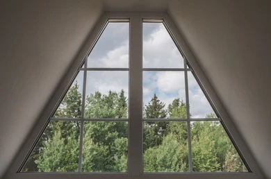

Un techo tiene forma de triángulo isósceles. Si la base mide 6 metros y
la altura 4 metros, ¿Cuál es el área del techo?
Rectángulo
Un jardín tiene forma de rectángulo. Si mide 8 metros de largo y 5
metros de ancho, ¿Cuántos metros de cerca se necesitan para rodearlo?
Rombo
Una ventana tiene forma de rombo. Si cada lado mide 40 cm, ¿Cuál es su
perímetro?
Trapecio

Una ventana tiene forma de trapecio isósceles. Si las bases miden 1.2 m
y 0.8 m, y la altura es de 0.6 m, ¿Cuál es su área? Contesta con dos
decimales.